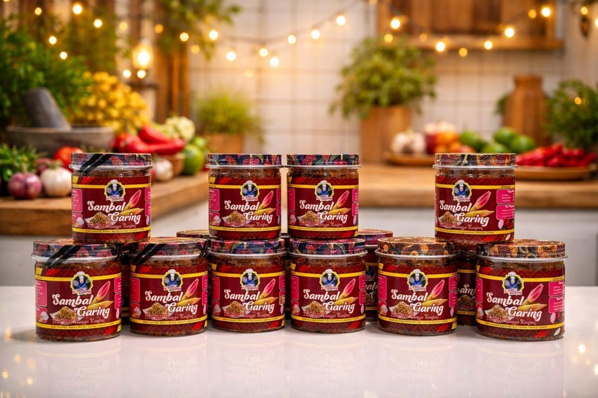
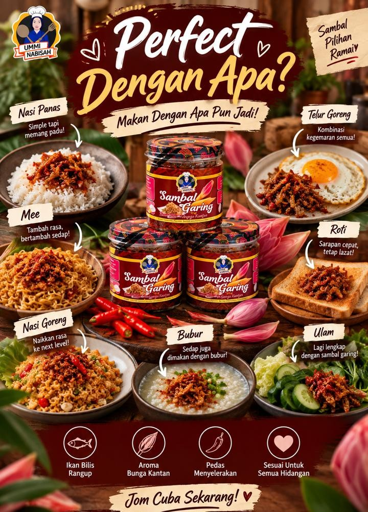
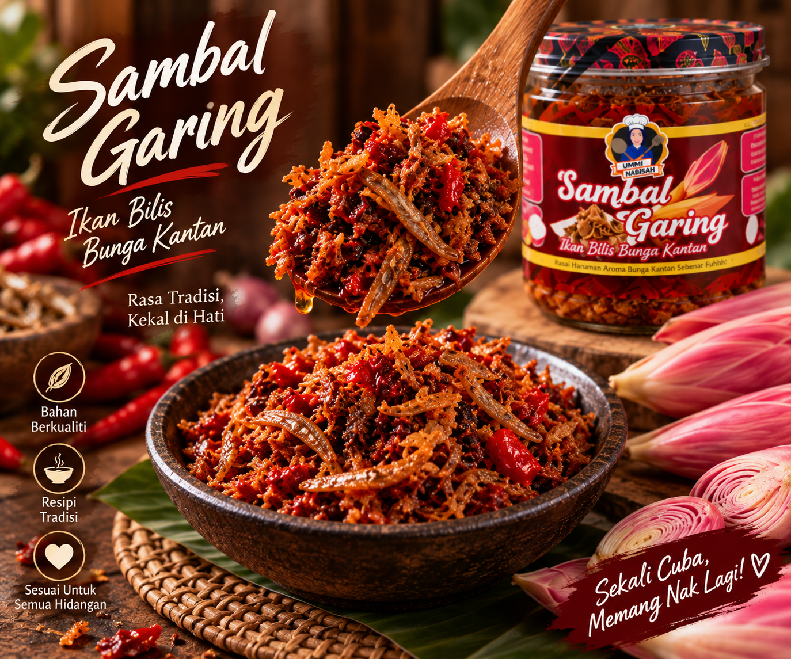
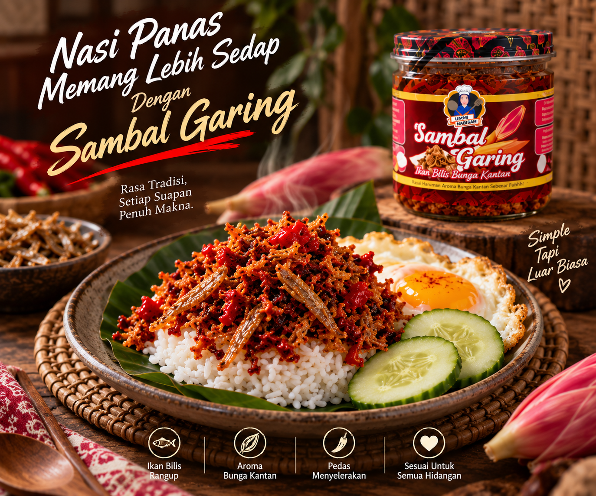
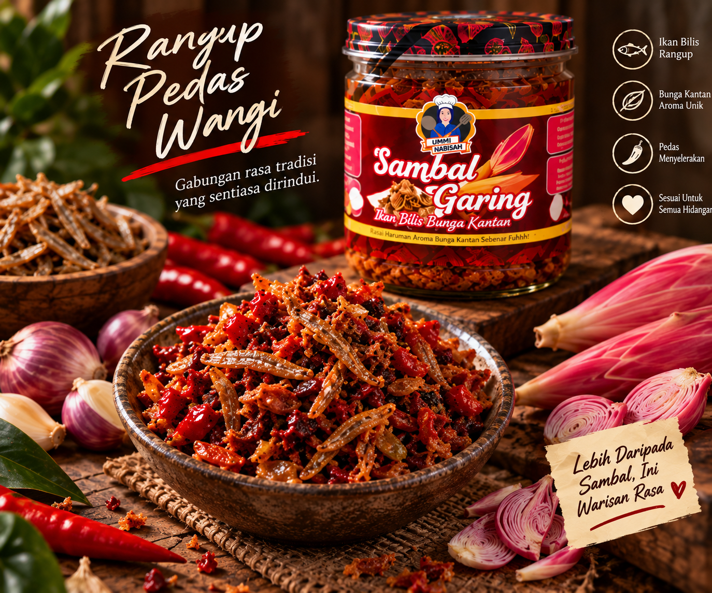
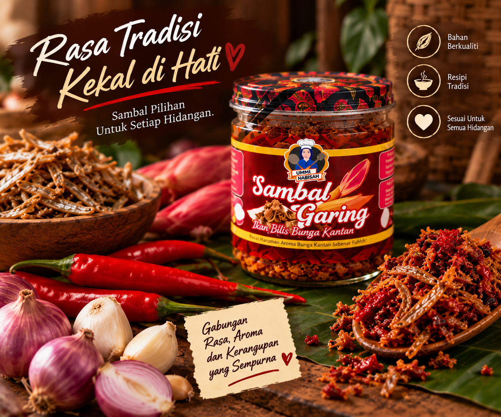
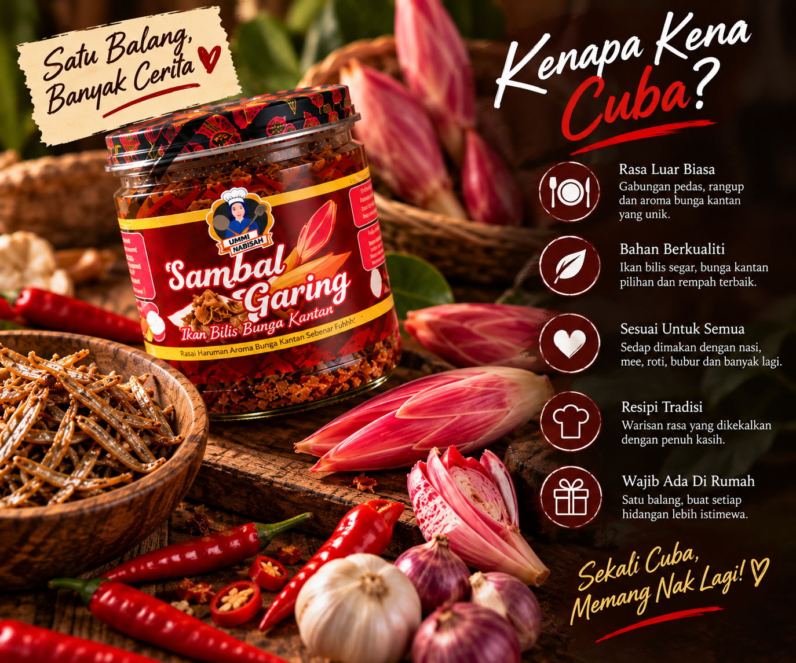
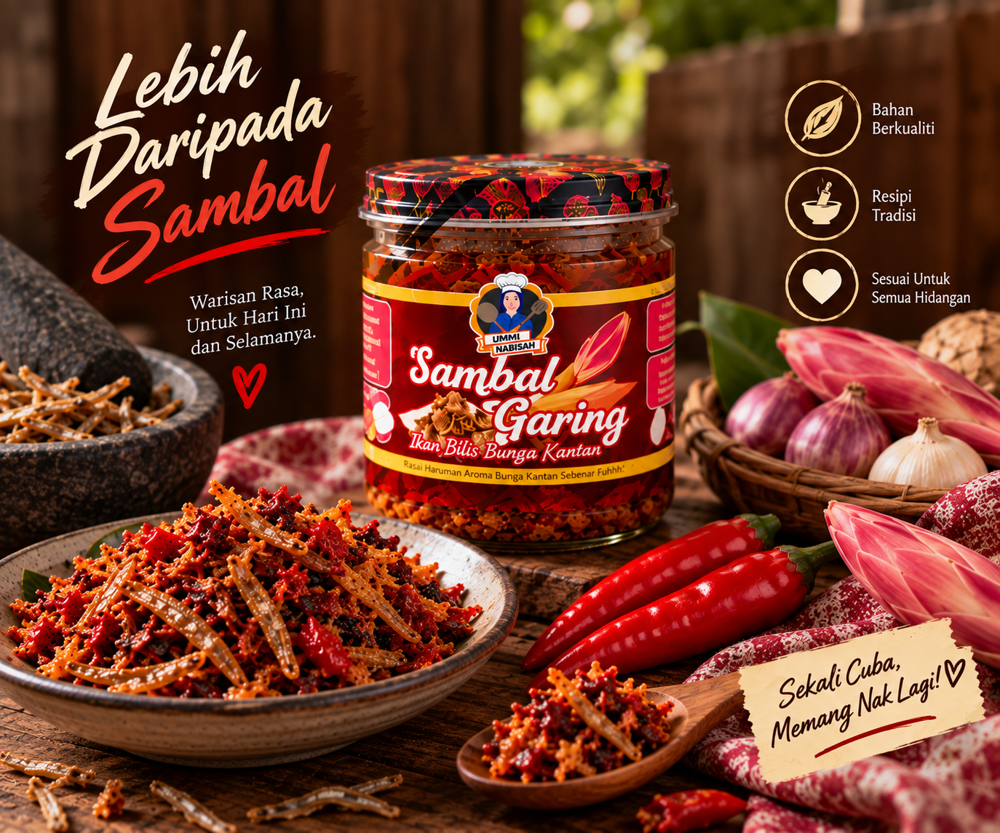

RASA WARISAN DALAM SETIAP SUAPAN
Nikmati sambal garing yang rangup, pedas dan penuh dengan aroma istimewa bunga kantan. Sesuai dinikmati bersama pelbagai hidangan pada bila-bila masa.

KENAPA PILIH KAMI?
Gabungan rasa pedas dengan aroma bunga kantan memberikan rasa yang unik dan menyelerakan.
Ikan bilis yang rangup menjadikan setiap suapan lebih nikmat dan penuh dengan rasa.
Sesuai dimakan bersama nasi, roti, mi atau hidangan kegemaran anda pada bila-bila masa.

TENTANG KAMI
Sambal Warisan menghasilkan sambal garing yang menggabungkan ikan bilis rangup dengan aroma istimewa bunga kantan. Setiap hidangan dihasilkan untuk memberikan rasa pedas, rangup dan menyelerakan.
Sesuai dinikmati bersama pelbagai hidangan, Sambal Warisan membawa rasa yang mudah dinikmati pada bila-bila masa.
DISCOVER OUR PRODUCTPRODUK KAMI
SAMBAL WARISAN
Sambal garing dengan gabungan ikan bilis rangup dan bunga kantan yang memberikan aroma serta rasa yang istimewa. Sesuai dijadikan pelengkap untuk hidangan harian anda.
GALERI KAMI
Lihat lebih dekat Sambal Warisan dan pelbagai cara untuk menikmatinya bersama hidangan kegemaran anda.






HUBUNGI KAMI
Dapatkan Sambal Garing Ikan Bilis Bunga Kantan kami dengan harga RM15.90. Hubungi kami untuk membuat tempahan atau pertanyaan.